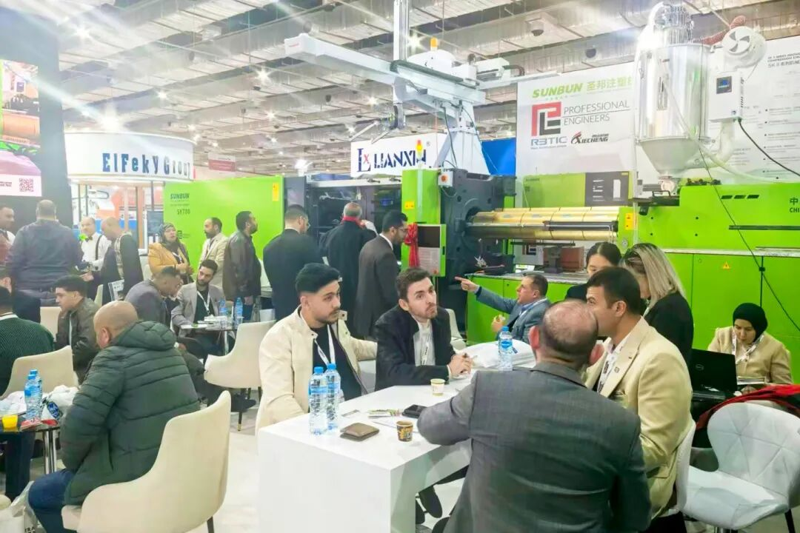
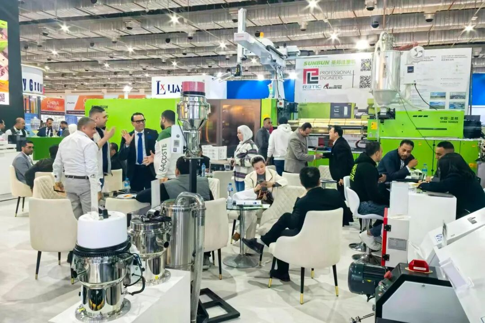
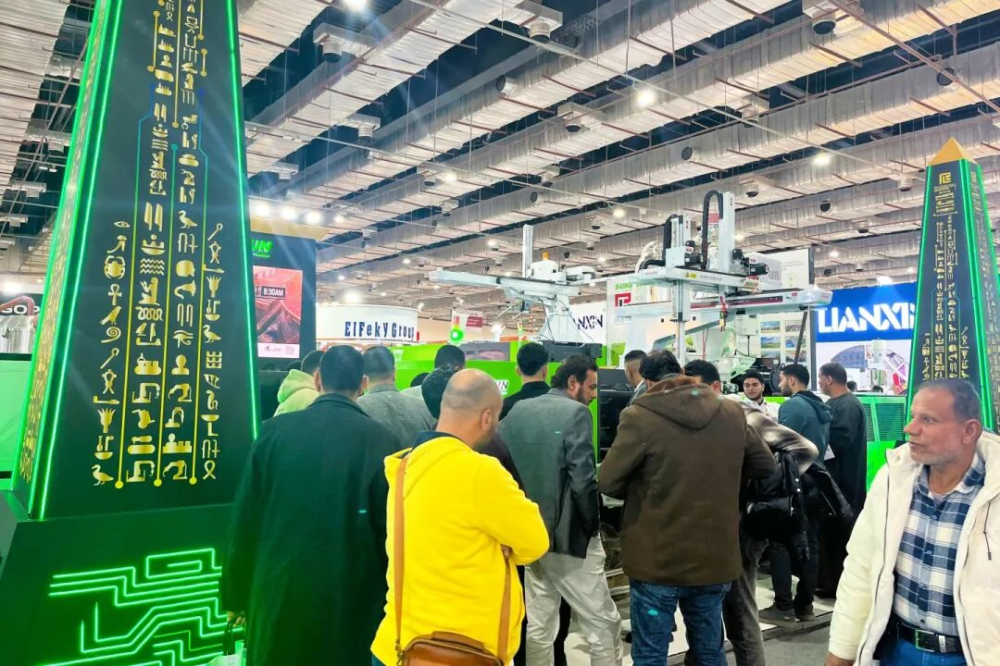
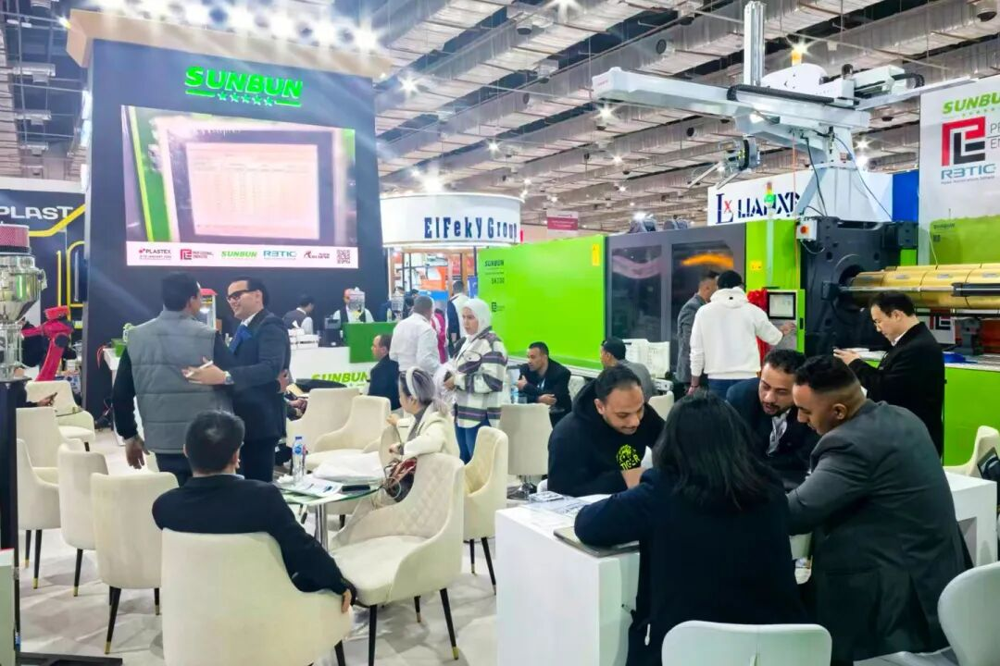
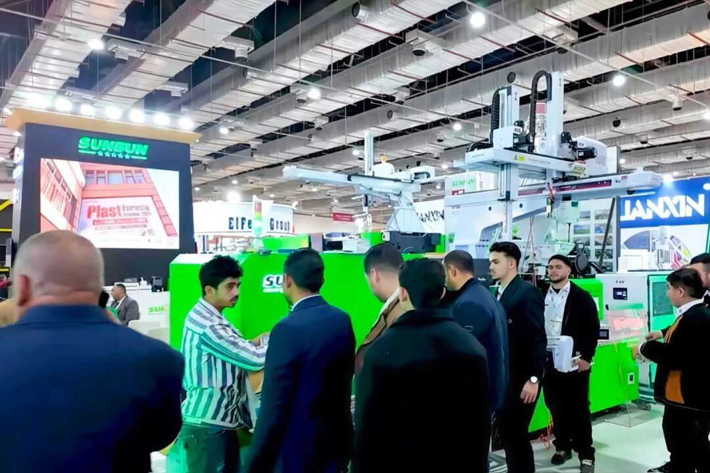
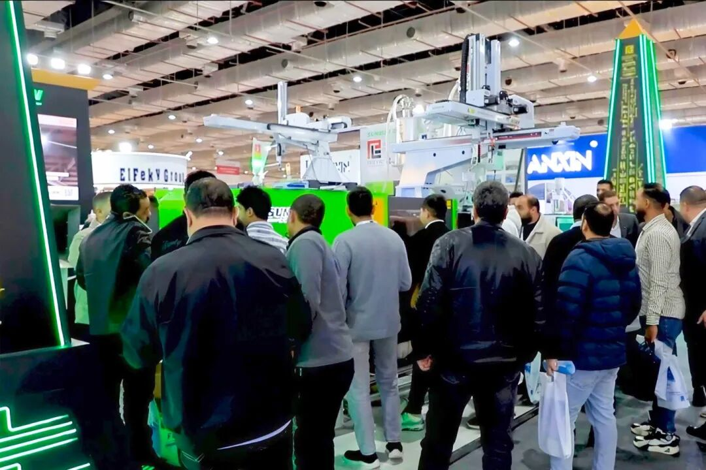

من 9 إلى 12 يناير 2026، افتُتح معرض PLASTEX القاهرة، أحد أكبر معارض البلاستيك في أفريقيا، في مركز مصر الدولي للمعارض بالقاهرة.
جذب هذا المعرض ليس فقط عددًا كبيرًا من المؤسسات حول العالم في صناعة آلات البلاستيك والصناعات ذات الصلة، بل أيضًا اهتمام العديد من الأفراد والشركات الساعين للتطور والنمو في الأسواق المصرية والأفريقية.






في هذا المعرض، عرضت KIWL مع فريق وكالتها المحلية أحدث طرازات آلات SK140 وSK700 للقولبة بالحقن بهيكل القفل المركزي، المصممة خصيصًا لخصائص السوق المصري. بالاستفادة من هيكل القفل المركزي الفريد لـ KIWL والتكنولوجيا المبتكرة وفلسفة الخدمة عالية الجودة، جذب العرض اهتمامًا كبيرًا من أقران الصناعة والزوار في معرض PLASTEX القاهرة بمصر، وحصل على إشادة عالية داخل الصناعة.
للسوق المصري، تتميز آلة KIWL المتخصصة لإطارات الفاكهة بالمزايا التالية:
▼إطار الآلة بأكمله مرتفع ومعزز لصلابة أكبر، يسهل المناولة اليدوية؛ ▼آلية بلمرة مطورة بالكامل مع مقاومة تآكل مضاعفة؛ ▼نظام سيرvo عالي الاستجابة لأداء أقوى؛ ▼نظام تحكم جديد بشاشة كبيرة لتحكم أدق وتفاعل أسهل.
ويُعتبر السوق المصري، بصفته أحد أسرع أسواق البلاستيك نمواً وأكثرها طلباً في المنطقة الأفريقية، يمتلك إمكانات سوقية هائلة. اعتبرت KIWL دائماً السوق المصري سوقاً استراتيجياً رئيسياً، ونمت وتقدمت مع السوق بالتعاون مع فريق وكالتها المحلي. من خلال هذا المعرض، لم تعمّق KIWL فهمها للسوق المحلي فحسب، بل أسست أيضاً علاقات تعاونية متينة مع عملاء من مصر والدول المجاورة.
وبالنظر إلى المستقبل، ستواصل KIWL زيادة استثماراتها في السوق المصري والسوق الأفريقي الأوسع، مع تحسين المنتجات والخدمات باستمرار لتلبية الاحتياجات المتنوعة للعملاء. نؤمن أنه من خلال المشاركة الناجحة في معرض PLASTEX بالقاهرة، ستخلق KIWL قيمة لمزيد من العملاء وتعزز معًا التنمية المستدامة لصناعة البلاستيك والمطاط.